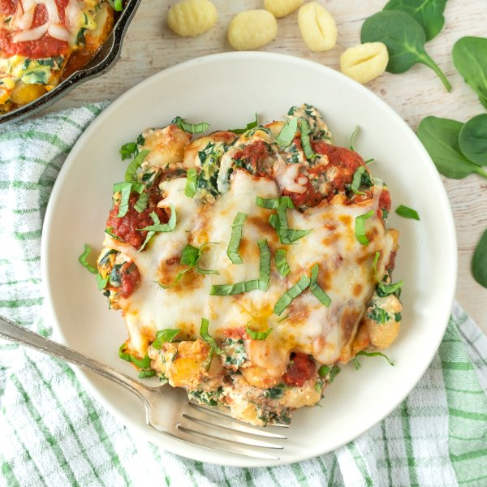

Cheesy Lasagna-Style Gnocchi Bake with Spinach & Fresh Basil

Nutrition (per serving)
689.9 kcalCalories
30.4 gProtein
54.1 gCarbs
40.5 gFat
Full nutrition table
| Calories | 689.9 kcal |
| Total fat | 40.5 g |
| Saturated fat | 22.6 g |
| Trans fat | 1.2 g |
| Cholesterol | 195.7 mg |
| Sodium | 1048.2 mg |
| Carbohydrates | 54.1 g |
| Fiber | 6.4 g |
| Sugars | 9.6 g |
| Protein | 30.4 g |
| Potassium | 1268.9 mg |
| Calcium | 534.5 mg |
| Iron | 6.3 mg |
| Vitamin A | 1798.3 IU |
| Vitamin C | 36.8 mg |
| Vitamin D | 56.7 IU |
Cookware
Ingredients
- 2 (5 oz) pkgsbaby spinach
- 2eggs
- 1 small pkgfresh basil
- 4 clovesgarlic
- ½ (8 oz) blockmozzarella cheese
- 2 (16 oz) pkgpotato gnocchi
- 1 (15 oz) pkgricotta cheese
- 2 (8 oz) canstomato sauce
- ½ mediumyellow onion
- black pepper
- extra virgin olive oil
- Italian seasoning
- salt
Steps
- Preheat oven to 450°F.
- Fill a large pot about halfway with hot water (from the tap); cover and bring to a boil over high heat. Uncover, add gnocchi and salt, and stir for a few seconds. Cook, stirring occasionally, until gnocchi begins to float to the surface, about 3 minutes. Drain in a colander and set aside.2 (16 oz) pkg potato gnocchi
1 tsp salt - Meanwhile, wash, dry, and roughly chop the spinach (skip washing if using pre-washed spinach). Transfer to a large bowl.2 (5 oz) pkgs baby spinach
- Peel and mince garlic and onion.4 cloves garlic
½ medium yellow onion - Preheat a large ovenproof skillet over medium-high heat.
- Once the skillet is hot, add oil and swirl to coat the bottom. Add garlic and onion to the skillet; cook, stirring frequently, until fragrant, about 1 minute.2 tsp extra virgin olive oil
- Add spinach to the skillet in handfuls, waiting for the spinach to wilt slightly before adding the next handful. Remove from heat and set aside. (Reserve bowl for later use.)
- Place tomato sauce, Italian seasoning, and salt in a medium bowl; whisk to combine and set aside.2 (8 oz) cans tomato sauce
2 tsp Italian seasoning
½ tsp salt - Wash, dry, and pick basil leaves off the stems, roll up crosswise, and thinly slice into ribbons.1 small pkg fresh basil
- Place ricotta, eggs, and spices in the reserved bowl; whisk until smooth. Add the cooked spinach and half the basil (reserving the rest for garnish); stir to combine.1 (15 oz) pkg ricotta cheese
2 eggs
½ tsp Italian seasoning
¼ tsp salt
¼ tsp black pepper - Wipe the skillet clean with paper towels and coat the bottom with oil. Transfer half the gnocchi to the skillet and spread it out in an even layer. Spoon half the spinach-ricotta mixture over the gnocchi, followed by half the tomato sauce. Repeat this process once more, creating two layers.1 tsp extra virgin olive oil
- Coarsely grate mozzarella and sprinkle on top of the gnocchi layers.½ (8 oz) block mozzarella cheese
- Place skillet in the oven and bake until cheese is melted and gnocchi is heated through, 10-15 minutes.
- To serve, divide gnocchi bake between plates and garnish with reserved basil. Enjoy!